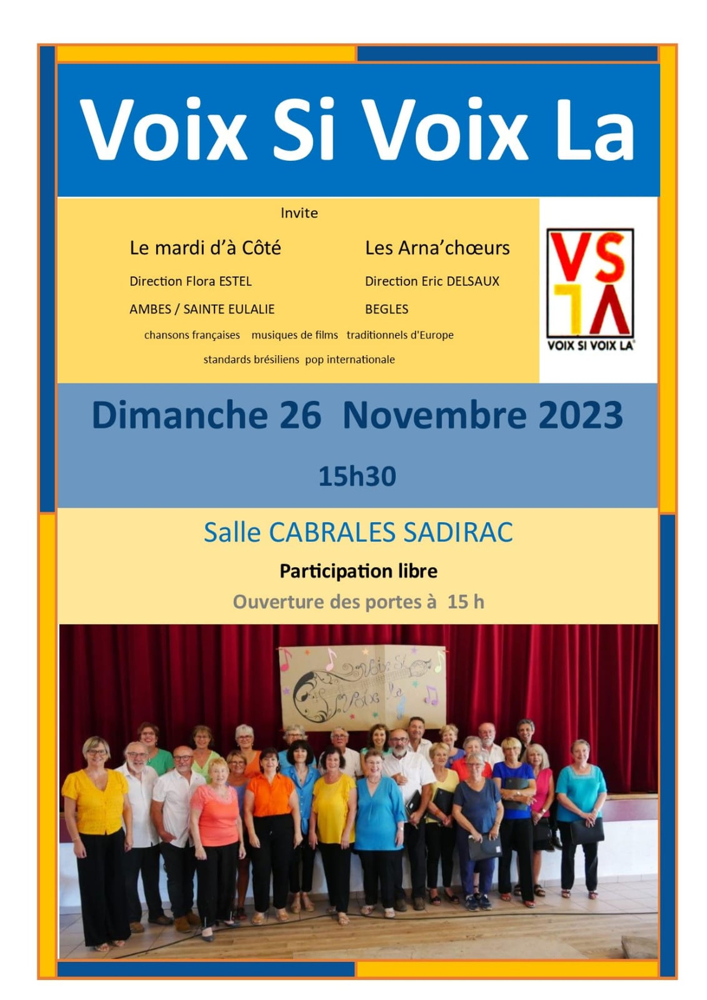
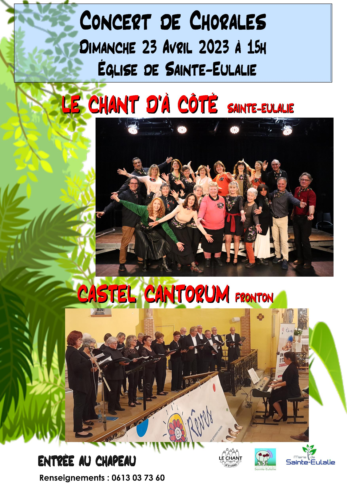
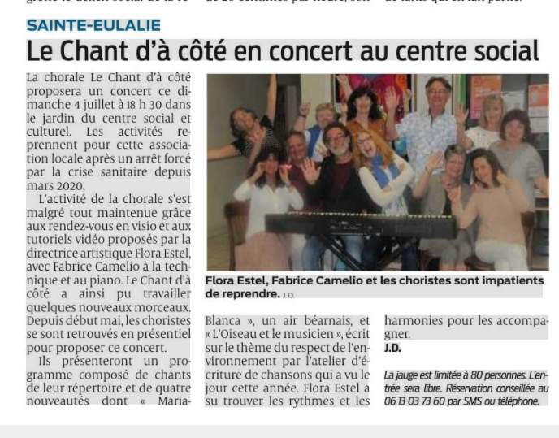
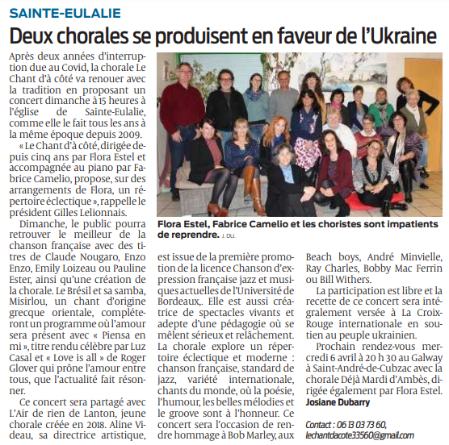
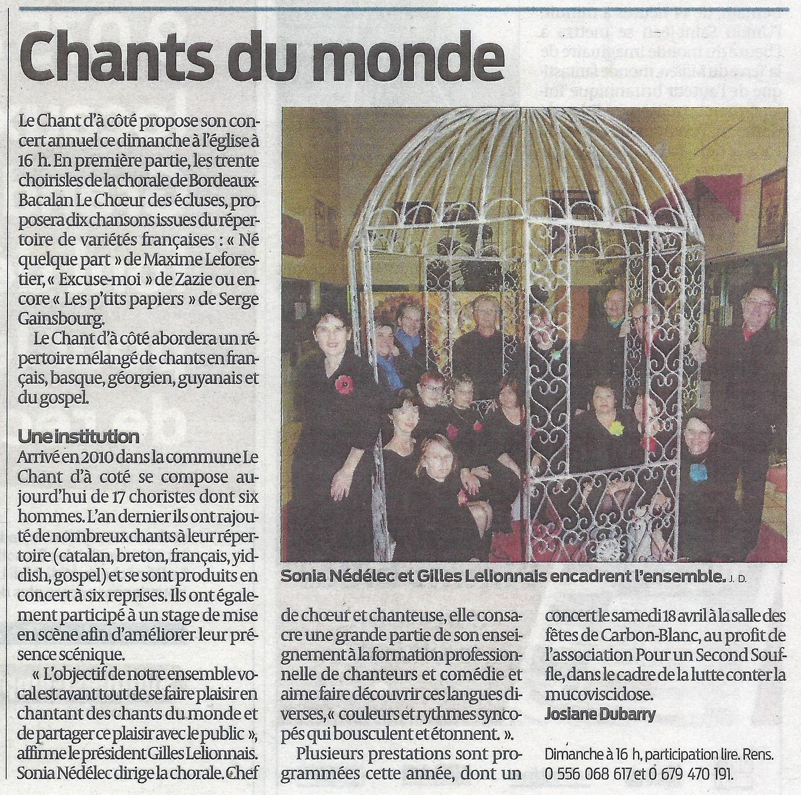

Des concerts, de belles actions et des coupures de presse
Août 2026Juin 2026Février 2026Mai 2025Avril 2025Avril 2025Septembre 2024Avril 2024

Novembre 2023Juin 2023Avril 2023

Avril 2023Septembre 2022Août 2022Mai 2022Avril 2022

Article Sud Ouest - Juillet 2021

Article Sud Ouest - Janvier 2021Mai 2017Mars 2019Article Sud Ouest – Septembre 2015

Article Sud Ouest - Février 2015Article Sud Ouest – 2014Décembre 2013Article Sud Ouest – Avril 2013Avril 2013Avril 2012Concert Église Sainte‑Eulalie – Février 2011Concert Ambarès – Juin 2010Mars 2010Article Sud Ouest – Janvier 2010Concert Église Sainte‑Eulalie – Janvier 2010